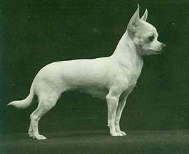

History:
Chihuahuas who are popularly known as "ankle-biters" were natives of Mexico, specifically from the island of Malta. Others originally thought that Chihuiahuas orirginated in China but found that they were fully canine nor related to chipmunks.
Aztec traditions:
When an aztec noble would die, they felt it was necessary to put down a chihuahua and bury/cremate it with the body. They believed the chihua to guide the human spirit into the afterlife.Chihuahuas were also a form of money and was used in trading, it was to a point that they were known for good furtune and was average to have in a home.

How they were bred:
A female dog named "Manzanita" and a male dog named "Caranza" mated and produced the famous bloodlines known as meron and Perrito. Most of these breeds were long coats, which was believed back then to be Pomeranians or Papillons. The first chihuahua to be founded was named "Midget". Chihuahuas were separated into two different varieties, the long coats and the smooth coats. It took over 50 years for both to be shown at an exhibit together.